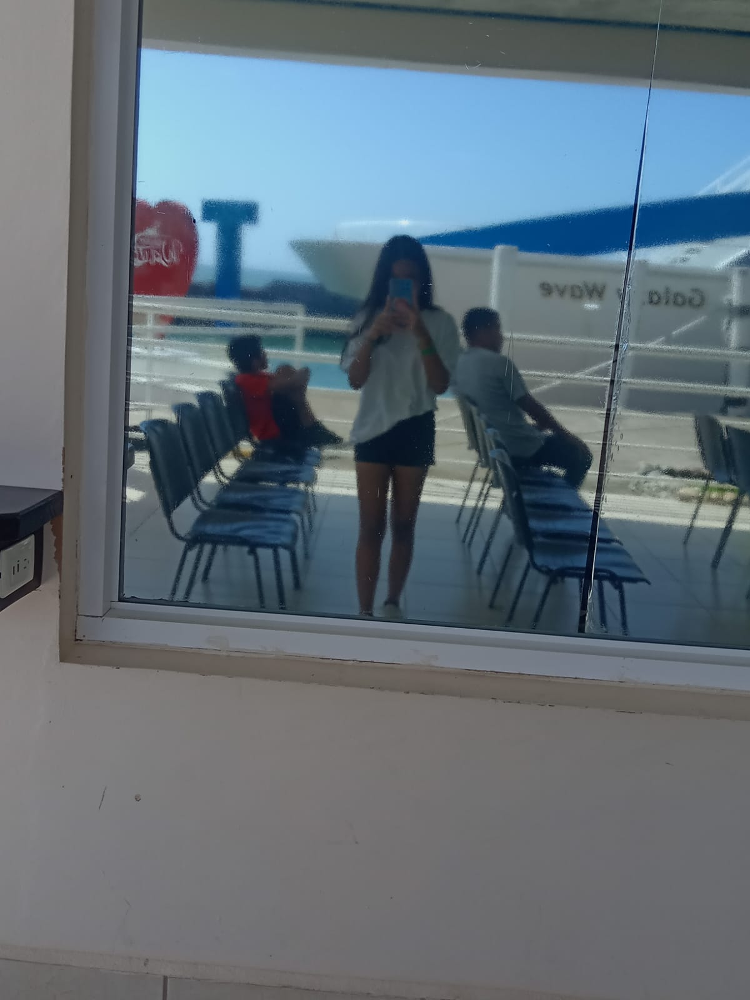
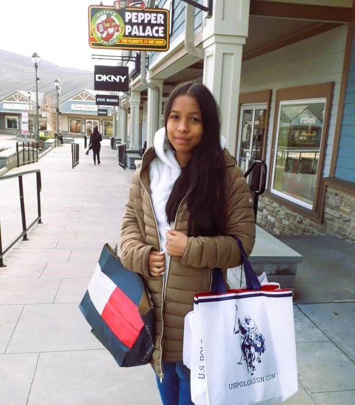
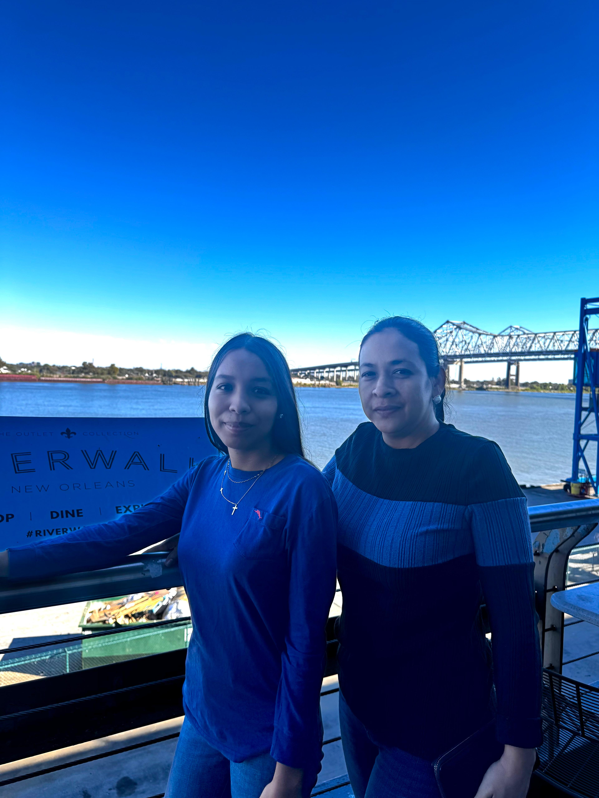

Mis Viajes |
| Mi Perfil | | | Mis Viajes | | | Contacto | | |
| Imagen | Descripción | Acompañantes |
|  | Viaje a Roatán
Viaje por mis 15 años a la isla de Roatán, disfrutando de sus playas, cultura y gastronomía local. |
Mi Familia Nuclear |
| Viaje a New Jersey
Mi primer viaje fuera de Centroamérica, explorando la cultura estadounidense, visitando lugares emblemáticos y disfrutando de la diversidad cultural. |
Mi papá Mi mamá Mi hermano |
|
|  | Viaje a Nueva York
Explorando la ciudad más grande de Estados Unidos, visitando monumentos históricos y disfrutando de su vibrante cultura. Tuve la oportunidad de subirme al mirador EDGE, el más alto del hemisferio occidental, y disfrutar de una vista panorámica impresionante de la ciudad. |
Mi papá Mi mamá Mi hermano |
|  | Viaje a Nueva Orleans
Explorando la ciudad histórica de Nueva Orleans, disfrutando de comida de la película de la Princesa Tiana Y visitando a mi mejor ami que no veia hace 2 años fue uno de mis viajes Favoritos por nuestro reencuentro |
Mi mamá |
| © 2025 Izabella Pérez. Todos los derechos reservados. |